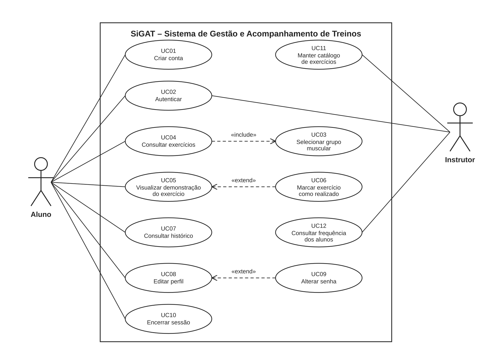
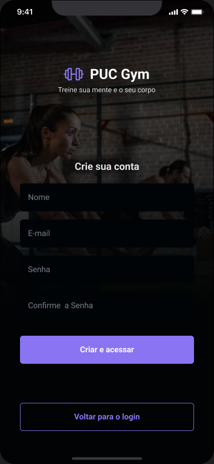
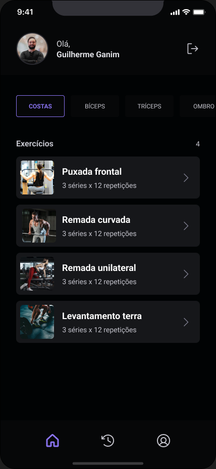
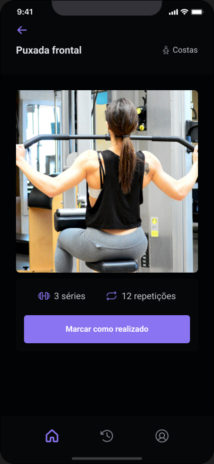
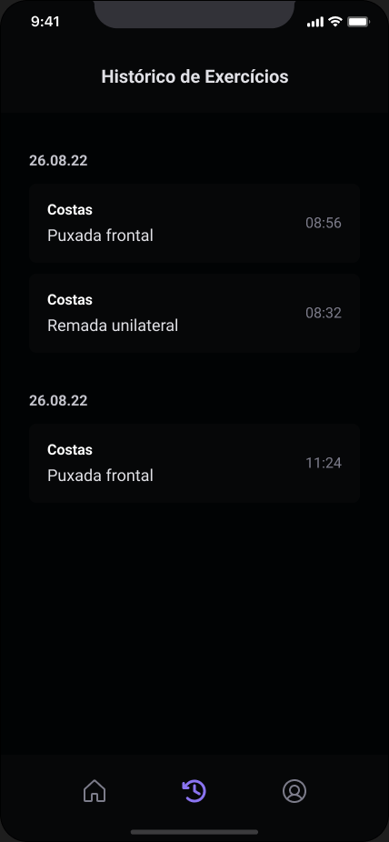
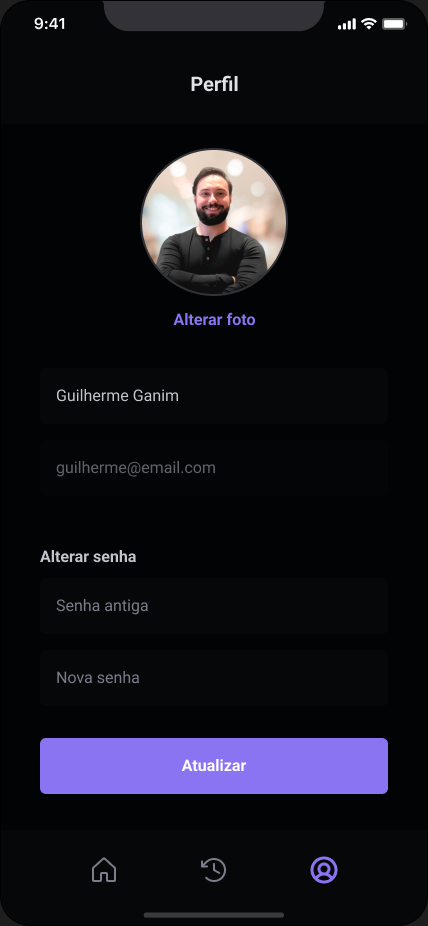

O diagrama abaixo representa as funcionalidades do SiGAT a partir da interação dos dois atores com o sistema. A fronteira delimita o que o sistema faz; o que está fora dela (o aluno e o instrutor) são os atores. As linhas contínuas são associações; as tracejadas indicam os relacionamentos include (comportamento obrigatório) e extend (comportamento opcional).

| Caso de uso | Ator | Requisito | Relacionamentos |
|---|---|---|---|
| UC01 – Criar conta | Aluno | RF01 | — |
| UC02 – Autenticar | Aluno, Instrutor | RF02 | Pré-condição de UC03 a UC12 |
| UC03 – Selecionar grupo muscular | Aluno | RF03 | Incluído por UC04 |
| UC04 – Consultar exercícios | Aluno | RF04 | «include» UC03 |
| UC05 – Visualizar demonstração do exercício | Aluno | RF05 | Estendido por UC06 |
| UC06 – Marcar exercício como realizado | Aluno | RF06 | «extend» UC05 |
| UC07 – Consultar histórico | Aluno | RF07 | — |
| UC08 – Editar perfil | Aluno | RF08 | Estendido por UC09 |
| UC09 – Alterar senha | Aluno | RF09 | «extend» UC08 |
| UC10 – Encerrar sessão | Aluno | RF10 | — |
| UC11 – Manter catálogo de exercícios | Instrutor | RF11 | — |
| UC12 – Consultar frequência dos alunos | Instrutor | RF12 | — |
UC02 – Autenticar
| Descrição | O usuário informa e-mail e senha para acessar o aplicativo. |
| Ator principal | Aluno |
| Ator secundário | Instrutor (mesma tela, perfil diferente) |
| Pré-condições | Conta criada (UC01) |
| Gatilho | Usuário abre o aplicativo sem sessão ativa |
| Ações do ator | Ações do sistema |
|---|---|
| 1. Informa e-mail e senha e toca em "Acessar" | 2. Valida o formato do e-mail e o preenchimento dos campos |
| 3. Confere as credenciais no servidor | |
| 4. Cria a sessão, guarda o token no aparelho e abre a tela inicial |
Fluxo alternativo A1 – Usuário sem conta: no passo 1, toca em "Criar conta"; o sistema abre o UC01.
Fluxo de exceção E1 – Credenciais inválidas: no passo 3, o servidor não encontra a combinação; o sistema exibe "E-mail ou senha incorretos" e mantém o usuário na tela.
Fluxo de exceção E2 – Sem conexão: no passo 3, a requisição falha; o sistema exibe "Sem conexão com o servidor. Tente novamente." e permite nova tentativa.
UC04 – Consultar exercícios
| Descrição | O aluno escolhe um grupo muscular e vê os exercícios cadastrados para ele. |
| Ator principal | Aluno |
| Ator secundário | — |
| Pré-condições | Sessão ativa (UC02); catálogo com ao menos um exercício (UC11) |
| Gatilho | Aluno abre a tela inicial ou toca em um grupo muscular |
| Ações do ator | Ações do sistema |
|---|---|
| 1. Exibe a saudação com o nome e a foto do aluno e a lista de grupos musculares (UC03) | |
| 2. Toca em um grupo muscular | 3. Destaca o grupo selecionado |
| 4. Busca no servidor os exercícios ativos do grupo | |
| 5. Lista os exercícios com miniatura, nome, séries e repetições, e o total encontrado | |
| 6. Toca em um exercício | 7. Abre o UC05 |
Fluxo alternativo A1 – Sem conexão: no passo 4, o sistema exibe a última lista carregada para o grupo e um aviso de que os dados podem estar desatualizados.
Fluxo de exceção E1 – Grupo sem exercícios: no passo 5, a busca retorna vazio; o sistema exibe "Nenhum exercício cadastrado para este grupo".
UC06 – Marcar exercício como realizado
| Descrição | Após visualizar a demonstração, o aluno registra que executou o exercício. |
| Ator principal | Aluno |
| Ator secundário | — |
| Pré-condições | Tela do exercício aberta (UC05) |
| Gatilho | Aluno toca em "Marcar como realizado" |
| Ações do ator | Ações do sistema |
|---|---|
| 1. Toca em "Marcar como realizado" | 2. Envia ao servidor o exercício, o aluno, a data e a hora |
| 3. Grava o registro no histórico do aluno | |
| 4. Exibe "Parabéns! Exercício registrado no seu histórico." e retorna à lista de exercícios |
Fluxo alternativo A1 – Sem conexão: no passo 2, o sistema guarda o registro no aparelho, informa "Registrado. Será sincronizado quando a conexão voltar." e envia ao servidor na próxima conexão.
Fluxo de exceção E1 – Falha no servidor: no passo 3, o servidor retorna erro; o sistema exibe "Não foi possível registrar. Tente novamente." e mantém o botão disponível.
UC07 – Consultar histórico
| Descrição | O aluno vê os exercícios que já realizou, agrupados por dia. |
| Ator principal | Aluno |
| Ator secundário | — |
| Pré-condições | Sessão ativa (UC02) |
| Gatilho | Aluno toca no ícone de histórico no menu inferior |
| Ações do ator | Ações do sistema |
|---|---|
| 1. Toca em "Histórico" | 2. Busca no servidor os registros do aluno |
| 3. Agrupa por data, do dia mais recente para o mais antigo | |
| 4. Exibe, em cada registro, o grupo muscular, o nome do exercício e a hora |
Fluxo de exceção E1 – Sem registros: no passo 3, não há registros; o sistema exibe "Não há exercícios registrados ainda. Vamos treinar hoje?".
UC11 – Manter catálogo de exercícios
| Descrição | O instrutor cadastra, edita ou desativa exercícios do catálogo. |
| Ator principal | Instrutor |
| Ator secundário | — |
| Pré-condições | Sessão ativa com perfil de instrutor (UC02) |
| Gatilho | Instrutor acessa a área de catálogo |
| Ações do ator | Ações do sistema |
|---|---|
| 1. Escolhe "Novo exercício" | 2. Exibe o formulário: nome, grupo muscular, séries, repetições, miniatura e animação |
| 3. Preenche e confirma | 4. Valida os campos obrigatórios e o tamanho das imagens (RNFO03) |
| 5. Grava o exercício como ativo e o disponibiliza na lista dos alunos |
Fluxo alternativo A1 – Editar: no passo 1, escolhe um exercício existente; o sistema abre o formulário preenchido e, ao confirmar, grava as alterações.
Fluxo alternativo A2 – Desativar: no passo 1, escolhe "Desativar"; o sistema marca o exercício como inativo, ele some da lista dos alunos e permanece no histórico de quem já o realizou.
Fluxo de exceção E1 – Imagem acima do limite: no passo 4, a animação passa de 300 KB; o sistema recusa e informa o limite.
Os demais casos de uso (UC01, UC03, UC05, UC08, UC09, UC10 e UC12) seguem o mesmo formato e têm fluxo direto de uma ou duas ações, descritas nos respectivos requisitos da seção 4.
O protótipo de alta fidelidade foi construído no Figma, para iPhone 14/15 Pro Max, em tema escuro, e está disponível em figma.com/design/XsmNzKUL08eEDuwVclCDK6. As seis telas cobrem todos os casos de uso do aluno; a área do instrutor (UC11 e UC12) é administrativa e será prototipada na etapa de implementação.
Login → (Criar conta) → Home → Exercício → Marcar como realizado → Home. O menu inferior, presente em todas as telas internas, leva a Home, Histórico e Perfil. Do início do aplicativo até marcar um exercício como realizado são três toques: grupo muscular, exercício e "Marcar como realizado", atendendo ao RUSA01.





Figura 2 – Telas do protótipo de alta fidelidade.
Os requisitos e os protótipos foram apresentados aos dois entrevistados em uma sessão única na academia. Cada participante navegou pelo protótipo no Figma, no próprio celular, executando as tarefas propostas pela equipe enquanto comentava em voz alta.
| Item | Registro |
|---|---|
| Data | 24/09/2026, das 19h às 20h15, na Academia Corpo em Movimento |
| Participantes | Carlos Henrique Dutra (proprietário e instrutor); Ana Beatriz Rocha (aluna há oito meses) |
| Requisitos avaliados | RF01 a RF10 e as exigências de usabilidade RUSA01 a RUSA03 |
| Telas avaliadas | Telas 01 a 06 |
| Tarefas propostas | Criar conta; entrar; encontrar a "Remada curvada"; marcar como realizada; conferir no histórico; trocar a foto do perfil |
| # | Quem | Apontamento | Decisão |
|---|---|---|---|
| 1 | Aluna | No histórico, só o nome do exercício não bastava: "Remada eu faço para costas e para ombro, quero saber qual foi" | Aceito. RF07 alterado para exibir o grupo muscular em cada registro; tela 05 ajustada |
| 2 | Instrutor | O total de exercícios do grupo deveria aparecer na lista, para o aluno saber quantos faltam | Aceito. Contador adicionado ao lado do título "Exercícios" na tela 03 |
| 3 | Aluna | Queria receber lembrete quando ficasse três dias sem treinar | Registrado como requisito futuro. Fora do escopo desta versão, por depender de notificação push |
| 4 | Instrutor | Perguntou se poderia montar ficha individual por aluno | Registrado como requisito futuro e mantido como restrição (seção 5.2): nesta versão o catálogo é único por grupo muscular |
| 5 | Ambos | Confirmaram que três toques até registrar o exercício é adequado para uso entre as séries | RUSA01 validado sem alteração |
Os dois participantes concluíram todas as tarefas sem ajuda. Os apontamentos 1 e 2 foram incorporados ao documento e ao protótipo em 24/09/2026; os apontamentos 3 e 4 ficaram registrados para a próxima versão. O instrutor validou a lista de requisitos como fiel ao que foi conversado na entrevista.
| Requisito | Caso de uso | Protótipo / tela | Origem | Validado? |
|---|---|---|---|---|
| RF01 – Criar conta | UC01 | Tela 02 | Instrutor | Sim |
| RF02 – Autenticar | UC02 | Tela 01 | Instrutor, Aluna | Sim |
| RF03 – Listar grupos musculares | UC03 | Tela 03 | Instrutor | Sim |
| RF04 – Listar exercícios do grupo | UC04 | Tela 03 | Instrutor, Aluna | Sim (ajuste 2) |
| RF05 – Exibir demonstração | UC05 | Tela 04 | Instrutor | Sim |
| RF06 – Marcar como realizado | UC06 | Tela 04 | Instrutor, Aluna | Sim |
| RF07 – Consultar histórico | UC07 | Tela 05 | Aluna | Sim (ajuste 1) |
| RF08 – Editar perfil | UC08 | Tela 06 | Aluna | Sim |
| RF09 – Alterar senha | UC09 | Tela 06 | Instrutor | Sim |
| RF10 – Encerrar sessão | UC10 | Tela 03 (ícone de saída) | Aluna | Sim |
| RF11 – Manter catálogo | UC11 | Área do instrutor (próxima etapa) | Instrutor | Requisito validado; tela pendente |
| RF12 – Consultar frequência | UC12 | Área do instrutor (próxima etapa) | Instrutor | Requisito validado; tela pendente |
A primeira contribuição do SiGAT ao meio ambiente é direta: a eliminação da ficha de treino em papel. Na academia atendida, cada aluno recebe uma ficha nova a cada troca de treino, a cada dois meses, e as fichas danificadas são reimpressas no meio do caminho. Com 180 alunos ativos, isso representa mais de mil folhas impressas por ano, além dos cartuchos de tinta e dos fichários plásticos que as guardam. O aplicativo substitui esse fluxo por um registro digital que não rasga, não se perde e não precisa ser refeito quando o instrutor ajusta as séries.
A segunda contribuição está na forma como o sistema foi especificado. Os requisitos RNFO03 e RPOR02 limitam o tamanho das imagens e reaproveitam os dados já carregados no aparelho, o que reduz o tráfego de rede e o consumo de energia dos servidores e dos celulares. A arquitetura cliente/servidor em contêineres permite hospedar o sistema em uma única instância pequena, dimensionada para os cem alunos simultâneos do RPER03, em vez de infraestrutura ociosa. Por fim, o uso do celular que o aluno já possui, sem exigir tablet ou totem na academia, evita a compra de equipamento eletrônico novo e o descarte que viria depois.
| Termo | Descrição |
|---|---|
| Aluno | Pessoa matriculada na academia que usa o aplicativo para treinar |
| Instrutor | Profissional de educação física que mantém o catálogo e acompanha os alunos |
| Catálogo de exercícios | Conjunto de exercícios cadastrados, organizados por grupo muscular |
| Grupo muscular | Categoria de treino: costas, bíceps, tríceps, ombro, peito, pernas ou abdômen |
| Série | Bloco de execução contínua de um exercício; o treino padrão prevê três séries |
| Repetição | Cada movimento completo dentro de uma série |
| Demonstração | Imagem animada que mostra a execução correta do exercício |
| Registro de treino | Anotação de que o aluno realizou um exercício, com data e hora |
| Histórico | Lista dos registros de treino do aluno, agrupada por dia |
| Sessão | Período em que o aluno permanece autenticado no aparelho sem repetir o login |
| Frequência | Quantidade de dias em que o aluno registrou ao menos um exercício |
O trabalho partiu de um problema concreto — a ficha de treino em papel de uma academia de Goiânia — e percorreu o caminho completo da engenharia de requisitos: entrevistas com o proprietário e com uma aluna, observação do salão no horário de pico, análise das fichas e da planilha de matrículas, especificação de doze requisitos funcionais e quinze não funcionais, modelagem em doze casos de uso, prototipação de seis telas e validação com os próprios usuários, que resultou em dois ajustes incorporados e dois requisitos registrados para a próxima versão.
A principal aprendizagem do grupo foi a ligação entre os artefatos: cada pergunta da entrevista virou um requisito, cada requisito virou um caso de uso, e cada caso de uso tem uma tela que o usuário conseguiu operar sem ajuda. O SiGAT segue a arquitetura cliente/servidor exigida pela disciplina. Como complemento à especificação, o grupo implementou uma versão de referência do aplicativo em React e da API em Node.js, disponível no repositório do projeto, que executa os casos de uso do aluno de ponta a ponta.